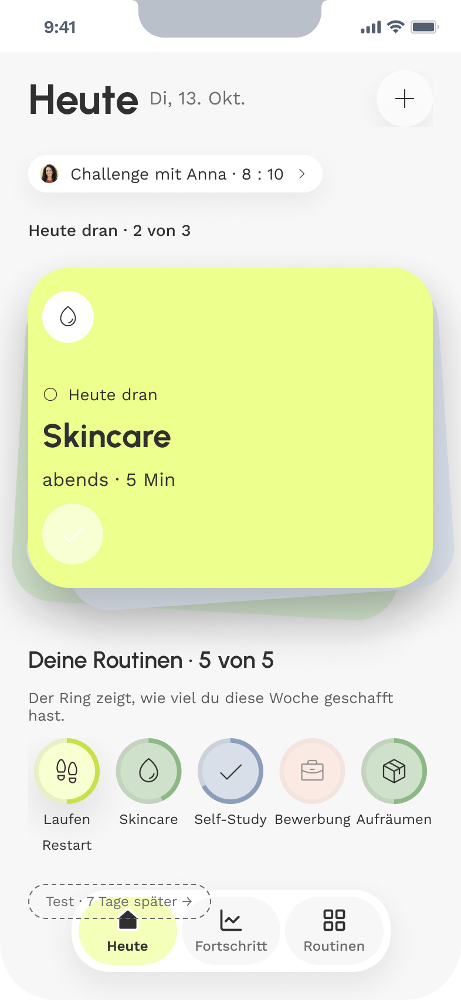

01
„Halbe Runde“ war mehrdeutig
Im Test war unklar, ob „Halbe Runde“ Strecke oder Häufigkeit meint. Jetzt steht die Stufe in Kilometern da, mit Balken zum Vergleich.
Case 01 · UX/UI · Product Design




Über das Projekt
ReSway ist keine weitere Tracking-App, die Serien zählt. Sie ist für den Moment danach: wenn eine Routine abgebrochen ist und der Wiedereinstieg am schwersten fällt. Eine Woche auf kleinerer Stufe, dann entscheidest du selbst.

Die Hürde ist der Moment des Anfangens. Nach ein paar Tagen Pause wächst der Abstand zur Routine jeden Tag.
Wiedereinstieg nach Wochen oder nie
78,6 %
schaffen den Wiedereinstieg erst nach Wochen oder gar nicht mehr ohne kompletten Neuaufbau.
Frustration 4–5 von 5
100 %
bewerten die Phase des Aufschiebens mit 4 oder 5 von 5 auf der Frustrationsskala.
„…wieder die Kraft zu finden, das komplett von vorne aufzubauen, ist am schwersten.“
Zwei Sätze aus Interview und Umfrage. Dazu vier Entscheidungen, jede gegen eine Alternative.
„Ich hatte auch irgendwie Angst, … nicht auf dem alten Niveau zu sein.“
„Das Gefühl, versagt zu haben, zu überwinden.“
Vier Momente, in denen ReSway beim Wiedereinstieg hilft. Im MVP steckt nur dieser Restart-Modus. Routine-Modus, To-dos, KI-Agent und Challenges kommen später.
Aufgenommen im Figma-Prototyp, etwas schneller abgespielt und ohne Ton.
Mini, Halb oder Ganz. Die Stufe steht in der eigenen Einheit da, Balken zeigen den Unterschied.

Beim Anlegen einer Routine stellst du die Menge am Regler ein, hier 10 Minuten.

Auf Heute liegt die Restart-Routine oben im Stapel. Ein Tipp hakt sie ab, dann rückt die nächste nach.

Nach dem ersten Lauf feiert ReSway das Zurückkommen. Die Woche zeigt, welcher Tag geschafft ist.

Mid-Fi · 2 Personen · 6 Aufgaben. Das Konzept hat getragen. Gestolpert sind beide über einzelne Wörter.
Im Test war unklar, ob „Halbe Runde“ Strecke oder Häufigkeit meint. Jetzt steht die Stufe in Kilometern da, mit Balken zum Vergleich.
„Nach dem Kaffee“ und „Später entscheiden“ waren unklar. Jetzt gibt es Tageszeit, Uhrzeit und „Jederzeit“ und ein klares X zum Abbrechen.
„So lassen“ sagte nicht, was danach kommt. Jetzt beschreibt jede Option ihre Folge, etwa „Restart beenden – wieder als normale Routine“.
Rückmeldungen zum Hi-Fi
Den druckfreien Ton habe ich behalten, er kam gut an.
Wofür ich KI genutzt habe und was bei mir blieb.
Interviews transkribiert und die Umfrage ausgewertet.
Research.
Animationen und kritischer Sparringspartner.
Variante der Stufenwahl: Balken übernommen, Listenform verworfen.
Bilder: Sticker, Profilbild „Anna“, Bildwelt.
Nicht delegiert Interviews, Interpretation, Ideen, Logik und Aufbau, Designentscheidungen.
Was ich ins nächste Projekt mitnehme.
Konkrete Werte verstehen Menschen schneller als schöne Metaphern.
Heute klicke ich alles einmal komplett durch, bevor jemand anderes es tut.
Challenges und Sticker waren Ideen, die mein Test nicht verlangt hat. Heute frage ich zuerst: Hilft das beim Wiedereinstieg?